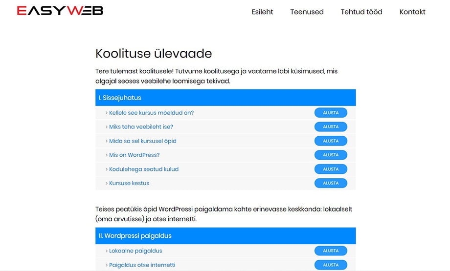

Multimeedia toote disain oli ühendatud tootearenduse ainega. Seega oli meie ülesandeks tootearenduse tunnis välja mõeldud toote disainimine ja edasiarendamine. Kõigepealt mõtlesime läbi ja panime kirja mis teemad koolituses kindlasti kaetud peaks olema, koostasime Google Sheets tabeli. Kuna meil oli juba enda jaoks enam-vähem välja mõeldud, milline struktuur ja disain olema saab, jagasime ülesanded meeskonna vahel ära - üks hakkas tegelema videotega, teised teksti- ja pildimaterjalidega.
Minu ülesanne oli luua teksti- ja pildimaterjali. Selleks paigaldasin lokaalselt WordPressi ning hakkasin töölauda samm-sammu haaval läbi käima ning ekraanitõmmiseid jäädvustama. Tehtud ekraanitõmmistel oluliste kohtade esile toomiseks kasutasin punaseid kastikesi. Piltide juurde kirjutasin ka tegevust kirjeldavat teksti. Kuna koolituse keskkonda veel loodud ei olnud, koostasime materjali esialgu lihtsalt tekstidokumendina.
Kasutatavad pildid muutsin Adobe Photoshopiga õigetesse mõõtmetesse ning Squoosh tarkvara kasutades vähendasin nende mahtu vähemalt poole võrra. Piltide töötlemine oli oluline selleks, et lehekülg ei muutuks mahult liiga suureks ja laeks kiiremini.
Seejärel hakkasime ühiselt looma koolituse keskkonda. Baasina kasutasime loomulikult WordPressi. Disaini osas oli meil algusest peale kindel plaan - võimalikult "kerge" ja puhas väljanägemine, koolitus jagatud eraldi sektsioonideks, iga sektsioon algab videoga ning selle järel tekstid ja pildid. Koolituse algusesse tegime ka sisukorra taolise lehe, mis annab ülevaate kõikidest koolituse teemadest.
Olulise kasutajamugavuse elemendina lisasime igale moodulile ka väikese navigatsioonimenüü, mis hõlbustab erinevate teemade ja sektsioonide vahelist liikumist. Aine lõpuks valmis töötav prototüüp mida saab näha SIIN. Kooli aasta edenedes on koolitusele plaan luua korralik esileht, kohandada navigatsioonielementi ning jätkata uute sektsioonide lisamist.